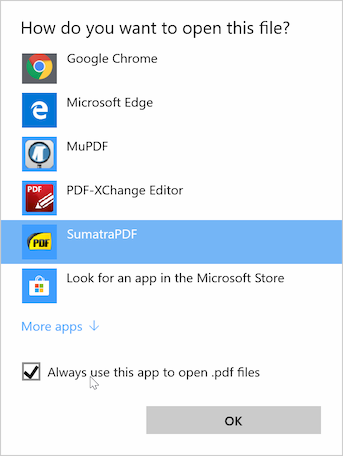

On Windows 10 you can make SumatraPDF to be a default viewer for all supported document types.
In that case double-clicking on a file in Explorer will open SumatraPDF to view the document.
Here's how to make SumatraPDF a default PDF viewer:
In Explorer:
- find a PDF file
- right-click to get a context menu
- select
Open withand thenChoose another app
From the list, choose SumatraPDF and check "Always use this app to open .pdf files":
You can do the same for other file types supported by SumatraPDF.